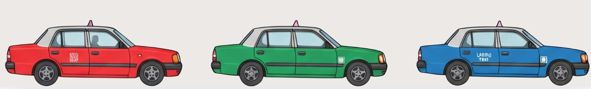

Taxis: The Real Lifesavers
Taxis are readily available and affordable compared to Western standards. They're a lifesaver when you're carrying heavy luggage or heading home late after a night out.
Red, green and blue taxis
- Red taxis operate in urban areas.
- Green taxis operate in the New Territories.
- Blue taxis operate on Lantau Island.
Split the fare. Sharing with friends makes a late-night ride much cheaper per person.
Pay with cash or through the Uber app.
